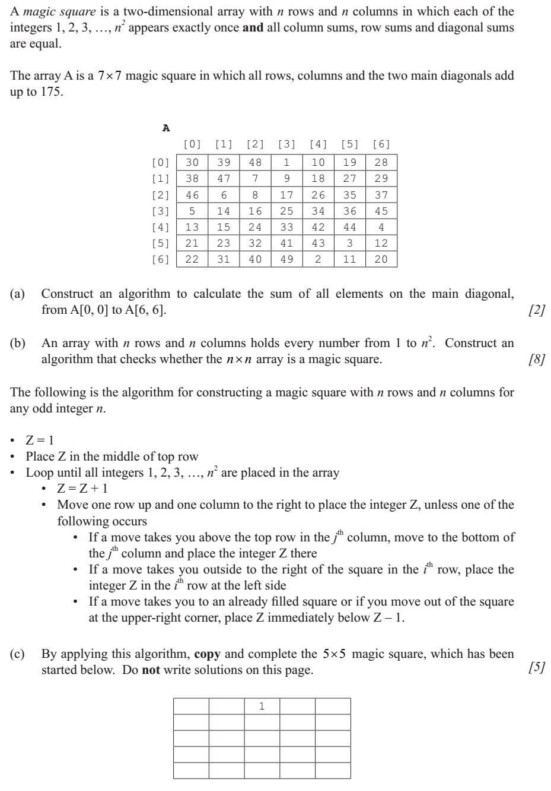

2016 Dec 09 : Coursework -- You have 80 minutes to complete the following activities:
About Pseudocode:
A significant topic in the programme is the approach to problem - solving. The step between defining the problem and producing the coded solution has been given more importance, and algorithms in examination questions will now be written in pseudocode instead of Java (as defined in the “Approved notation sheet”). Responses do not need to follow this pseudocode exactly but must clearly demonstrate the logic of the solution. Download approved notation.pdf and Pseudocode in Examinations.pdf and pseudocode_clarifications.pdf file.
1. The die problem
A student suspects that a die is biased and gets 6 friends to throw it 100 times each and record the results. An algorithm is required to:
enter these results from each person
store them in a collection called RESULTS
read the items back from the RESULTS collection
output the distribution of the numbers 1–6.(how many there is of each)
output whether or not the die is biased (you decide the criteria for determining this).
You are required to:
Write a solution to this problem in pseudocode. Try to use as much of the IB pseudocode as you can. You can "invent" pseudocode commands where necessary.
Implement your algorithm in Java. Please generate the dice data by yourself using random numbers in Java.
Upload your pseudocode and java code to your project page in a link named: 2016Dec09_pseudocode
2. The puzzle game

You are required to:
- Complete the questions of this past paper question. [pseudocode and algorithm]
- Implement your algorithms in Java or Python: The puzzle size n is an input from the user. Construct the magic square by printing it on the screen.
- Upload your answers to the question and java/python code to your project page in a link named: 2016Dec09_pseudocodeQ2